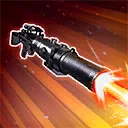
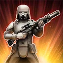
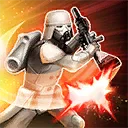

Snowtrooper Commander
A frontline enforcer who turns the enemy’s assault into snowballing momentum
A frontline enforcer who turns the enemy’s assault into snowballing momentum

Deal Physical damage to target enemy and inflict Vulnerable for 1 turn. If they already have Vulnerable, inflict Offense Down for 2 turns instead. During Snowtrooper Commander's turn, Snowtrooper will assist.

Dispel all debuffs on Snowtrooper Commander. Gain 200% Defense and Taunt for 2 turns. All Empire allies gain Defense Up for 2 turns and all Imperial Remnant allies gain Protection Up (50%) for 2 turns. Snowtrooper Commander recovers 30% Health and Protection.

Deal Physical damage to target enemy and Stun them for 1 turn. Snowtrooper and TIE Fighter Pilot gain Alert and Offense equal to 100% of Snowtrooper Commander's Defense for 1 turn. All Imperial Remnant non-Tank allies Stealth for 2 turns.

All Imperial Remnant allies have +100% Max Health and Max Protection. The first time each Imperial Remnant ally falls below 30% Health, they recover 30% Health and Protection and all other Imperial Remnant allies recover 15% Health and Protection, all Imperial Remnant allies gain Defense Up for 2 turns and Snowtrooper Commander Taunts for 2 turns.
Whenever an Imperial Remnant ally Ability Blocks an enemy, they gain Defense equal to 50% of Snowtrooper Commander's Defense for 1 turn.
Whenever an enemy attacks out of turn, inflict Speed Down on them for 1 turn and whenever an enemy resists a debuff, inflict Tenacity Down on them for 1 turn.
Omicron Boost : While in 3v3 Grand Arenas, and all allies are Imperial Remnant:
At the start of battle, Snowtrooper Commander Taunts and all non-Tank allies Stealth for 2 turns, all allies gain Advantage and Defense Up for 2 turns and 100% bonus Protection until the end of battle.
Whenever an enemy attacks out of turn or resists a debuff, Snowtrooper Commander Taunts, all non-Tank allies Stealth, and all allies gain Alert and Offense Up for 1 turn.
Whenever Snowtrooper Commander Taunts, all allies gain 10% Offense (stacking, max 150%) until the end of battle. Whenever an ally Stealths, that ally recovers 30% Protection. Stealthed allies have +200% Critical Chance and Critical Damage.
Whenever Snowtrooper Commander uses Hunker Down while Taunting, dispel all debuffs from all allies. Whenever an ally Ability Blocks an enemy, remove 30% Turn Meter from that enemy and increase their cooldowns by 1
While Snowtrooper Commander is Taunting, whenever he is damaged by an enemy, all Imperial Remnant allies gain 10% Defense Penetration (stacking, max 100%) until the end of battle and whenever he is inflicted with a debuff, all other Imperial Remnant allies gain 5% Turn Meter.
While Snowtrooper Commander is not Taunting, whenever another Imperial Remnant ally is damaged by an enemy, Snowtrooper Commander gains 30% Turn Meter.
While Snowtrooper Commander has Protection, all Imperial Remnant allies have 100% Critical Avoidance and Tenacity.
Whenever another Imperial Remnant ally scores more than one Critical Hit on their turn, that ally Stealths for 1 turn and Snowtrooper Commander Taunts for 1 turn, if Snowtrooper Commander was already Taunting, that ally recovers 10% Health and Protection.